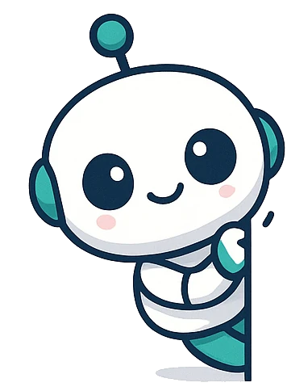
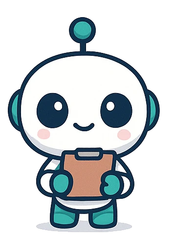
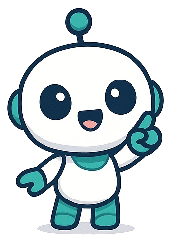
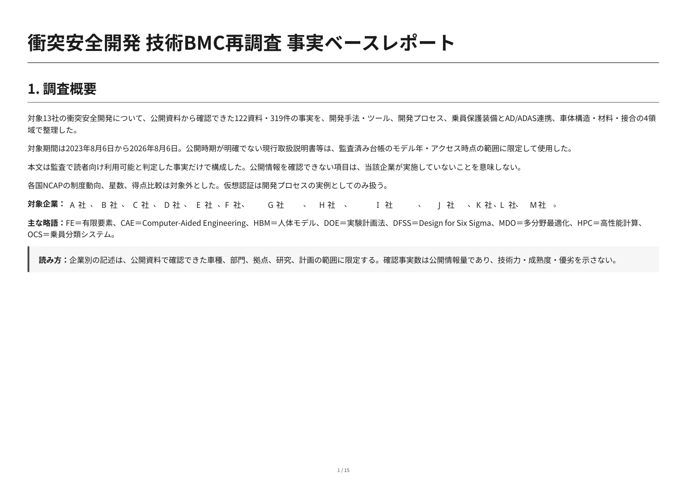
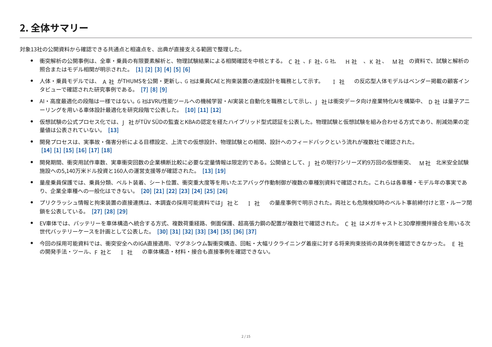

エンジニアのための
ベンチマーク調査ツール
AIチャットのDeep Researchが、出典で裏づけられた証拠ベースの調査レポートに変わります。
貼り付けたら、編集せずにそのまま送信。AIが「調べたいこと」を質問してきます。約2.8万字の長文が貼り付きますが、折りたたまれて表示されても正常です。
目安30〜60分・Deep Research実行4回ぶんを消費します（普通の場合）
Geminiで使う場合、または貼り付けがうまくいかない場合は、KITファイルをダウンロードして添付し、「この手順書に従ってください」と送信してください。

← 横にスクロールできます →
素の Deep Research で起きていること
AIに調べさせるだけでは、こうしたすれ違いがよく起きます。
出典があいまいなまま
どの資料の、どの記述にもとづくのかが分からないまま、結論だけが返ってくる。
一度の検索で終わる
複数の切り口を横断できず、本来確認すべき情報の抜け漏れに気づけない。
調べきれていないのに「ない」と断定
検索で見つからなかっただけの情報が、いつのまにか「存在しない」という言い切りに変わってしまう。
使い方は3ステップ
プロンプトをコピーしたら、あとはAIチャットとのやり取りだけで進みます。

1. コピーして、貼って、送信
「プロンプトをコピー」を押し、AIチャットに貼り付けて、編集せずにそのまま送信します。するとAIが「調べたいことは何ですか」と質問してくるので、調査テーマを返信するだけです。

2. 条件を確認し、プロンプトを受け取る
AIが目的・読者・対象・期間・対象外と、調査の深さ（既定は「普通」）を提示します。違う点があれば伝え、なければ「進めてください」のように返信すると、そのまま調査プロンプトが続けて提示されます。
3. 同じチャットで実行し、受け取る
新しいチャットを開く必要はありません。プロンプトは1本ずつ提示されます。貼って実行し、終わったら「次へ」と送るだけ。次のプロンプトが続けて提示されます（「しっかり」「がっつり」を選んだ場合だけ、検証用の一部プロンプトを独立性のため別チャットで実行していただきます）。最後の「次へ」で自動的に統合と根拠確認へ進み、出典付きのレポートが返ってきます。
そのまま渡せるレポートに
- A4横向き、読みやすい日本語フォントで構成
- 本文・表に論文形式の引用番号を付与
- 参考文献の一覧から原資料へリンク
※ Research KITで実際に作成した衝突安全ベンチマーク調査レポートの公開版です。企業名はA社〜M社にマスキングしています。レポート書式（A4横・引用番号・参考文献形式）はKIT本文に定義済みで、追加ファイルなしでこの形式が再現されます。


よくある質問
無料ですか
はい。CC BY 4.0のもとに公開しており、登録もアカウントも不要です。
どのAIチャットで使えますか
Deep Research機能を持つAIチャット（ChatGPT、Claudeなど）と、Web接続のない社内AIでも使えます。「プロンプトをコピー」はKIT本文を含んでいるため、どのAIでも貼り付けて送信するだけで動きます。送信すると、AIが調査テーマを質問してきます。Geminiは長文の貼り付けが不安定なため、KITファイルをダウンロードして添付する方式でご利用ください。
個別の調査プロンプトを貼ると、JSONではなくレポートや文書になります
Deep Researchが完了すると、JSONコードブロックではなくレポートや文書（ダウンロード・共有ボタン付きの別パネル）が先に表示されることがよくあります。これは想定内の動作です。ご自身で変換や修正をする必要はありません。同じチャットの中で調査が進むので、そのまま「次へ」と伝えて次のプロンプトに進んで構いません（AI側がその内容を直接読み取ります）。「しっかり」「がっつり」の検証用プロンプトのように別チャットで実行した分だけ、出てきた内容をそのままこのチャットに貼り戻してください。あわせて、Deep Research（サービスによっては「リサーチ」等の名称）モードがオンになっているかも確認してください。オフのままだと通常のチャット応答になり、Web調査自体が行われません。
ベンチマーク調査以外にも使えますか
使えます。Research KITは調査工程そのものを定義した汎用のキットなので、競合製品の比較、技術動向、規制・標準の調査など、テーマを書けばそのまま動きます。複数対象を横断して事実を突き合わせるベンチマーク型の調査で、特に力を発揮します。
どれくらい時間がかかりますか
目安は30〜60分です（普通の場合）。調査プロンプトは1本ずつ提示され、順番に直列で実行していただく形式のため、対象や環境によって前後します。
Deep Researchの利用回数は消費しますか
はい。ResearchRobo自体はプロンプトであり、Deep Research機能の実行回数や利用枠は、使用しているAIサービス側の制限にそのまま従います。普通の場合で4回消費します。
内容を改変して配布してもいいですか
CC BY 4.0のもとで、クレジット表記をすれば改変・再配布ができます。表記に必要な情報（著作者名・ライセンス・出典URL）は、KIT本文冒頭のLicense行にまとめてあります。
結果の正確性は保証されますか
KITは出典を突き合わせる監査の工程を組み込んでいますが、最終的な事実確認はご自身でも行ってください。
今すぐ試す
コピーして貼って送信するだけで、すぐに始められます。
貼り付けたら、編集せずにそのまま送信。AIが「調べたいこと」を質問してきます。約2.8万字の長文が貼り付きますが、折りたたまれて表示されても正常です。
目安30〜60分・Deep Research実行4回ぶんを消費します（普通の場合）
Geminiで使う場合、または貼り付けがうまくいかない場合は、KITファイルをダウンロードして添付し、「この手順書に従ってください」と送信してください。